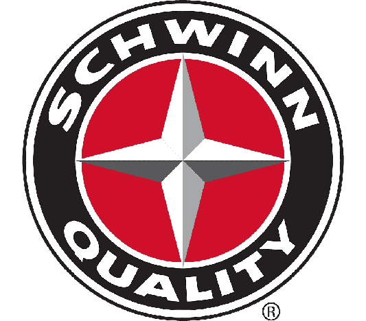
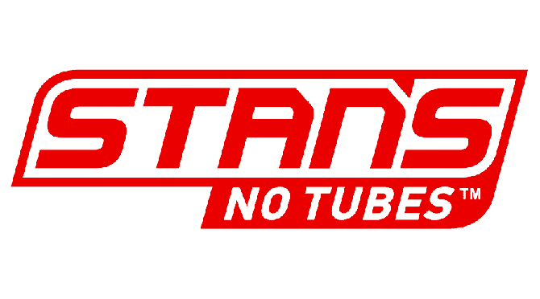
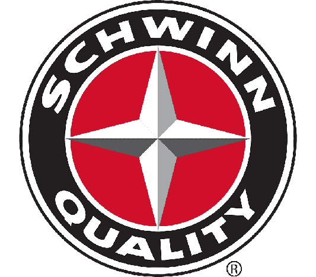
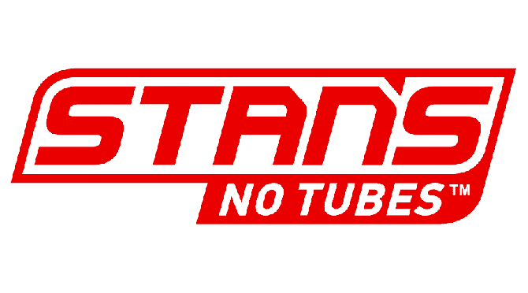

Курс по ремонту велосипедных вилок
дней
часов
минут
секунд
Учеников всего:
200
Успешно закончили курс:
190

Чем мы занимаемся?
На курсе обучают ремонту и обслуживанию велосипедных вилок. Студенты узнают о различных типах вилок и их особенностях, а также учатся диагностировать и решать проблемы с вилками, заменять запчасти и проводить техническое обслуживание. Кроме того, курс может включать в себя практические занятия и тренировки на ремонте вилок разных типов и марок. На курсе также могут рассматриваться особенности установки вилок на велосипед, правила безопасности при работе с инструментами и компонентами вилок, а также методы доводки и настройки вилок для оптимальной работы и комфорта велосипедиста. Кроме того, студенты могут узнать о новых технологиях и материалах, используемых в производстве вилок, и их влиянии на процессы ремонта и обслуживания.
Получите профессию прямо сейчас
Только практические навыки в работе
На курсе студенты проводят большую часть времени на практике, выполняя задания и упражнения по диагностике, ремонту и обслуживанию вилок. Теоретический материал может быть представлен в кратком и доступном формате, чтобы учащиеся могли быстрее перейти к практике. Курс будет полезен для тех, кто хочет быстро освоить практические навыки ремонта вилок и применить их на практике в своей работе или личном хобби. Студенты могут изучить особенности работы с различными типами вилок. Курс может быть организован с учетом опыта участников и нацелен на достижение конкретных целей в области ремонта вилок. Преподаватели могут предоставить студентам обратную связь и советы по улучшению их навыков, чтобы участники могли продолжать совершенствовать свои знания и умения.
Работа на самом современном оборудовании
Курс ориентирован на работу с современным оборудованием для ремонта велосипедных вилок. На курсе студенты могут познакомиться с последними достижениями в области технологий и инструментов, используемых в ремонте вилок. В рамках курса участники могут изучить различные типы современных инструментов, применяемых для диагностики, ремонта и обслуживания вилок, а также научиться работать с высокотехнологичными материалами и компонентами. Курс может быть полезен для профессионалов, работающих в велосервисах и желающих совершенствовать свои навыки и знания в области ремонта вилок, а также для любителей, желающих освоить новые технологии и методы работы с велосипедными вилками.
Сертификация по окончании обучения
Курс ориентирован на обучение профессиональных навыков в области ремонта велосипедных вилок и выдачу сертификата о завершении обучения. На курсе студенты могут получить квалификацию, подтверждающую их умение диагностировать, ремонтировать и обслуживать велосипедные вилки различных типов и марок. Курс организован с учетом стандартов и требований, установленных профессиональными ассоциациями или велосипедными производителями. По окончании обучения участники получат сертификат, который будет документировать их квалификацию и подтверждать их способность работать в области ремонта велосипедных вилок. Такой курс может быть полезен для тех, кто планирует работать в велосервисе или желает заниматься ремонтом вилок в качестве частного мастера.
Партнеры - топовые бренды
 



Ваши преподаватели

Джон Смит
Механик по вилкам
БиографияДжон Смит родом из Калифорнии, США, и является профессиональным механиком велосипедов с более чем 10-летним опытом работы в индустрии. Он получил сертификат от ведущих производителей велосипедных компонентов и специализируется на ремонте вилок, собирая их с нуля и настраивая на определенный тип катания. Джон является экспертом в области ремонта пружинных и воздушных вилок, а также имеет опыт работы с демпферами и настройки подвески. Он любит передавать свои знания и опыт студентам, чтобы они могли уверенно работать с любыми типами вилок.

Эмили Джонсон
Специалист по вилкам
БиографияЭмили Джонсон родилась и выросла в штате Нью-Йорк, США. Она работает в индустрии велосипедов уже более 8 лет и является специалистом по обслуживанию велосипедных вилок. Эмили имеет опыт работы в качестве механика велосипедов на различных мероприятиях, таких как соревнования и велосипедные фестивали, а также на чемпионатах мира по велоспорту. Она является сертифицированным специалистом по ремонту вилок от нескольких ведущих производителей, включая Fox, RockShox и Manitou. Эмили любит помогать студентам на курсах и передавать им свои знания и опыт.

Сара Миллер
Инструктор по вилкам
БиографияСара Миллер, сертифицированный инструктор по ремонту велосипедных вилок, имеет более 10-летний опыт работы в этой области. Она прошла специальную подготовку по ремонту вилок разных типов и брендов и успешно работает в качестве консультанта для профессиональных спортсменов и любителей велосипедного спорта. Сара активно участвует в международных соревнованиях и мероприятиях по велосипедному спорту, где использует свои знания и опыт для обслуживания вилок участников. Она также является автором нескольких статей и видеоуроков о ремонте велосипедных вилок